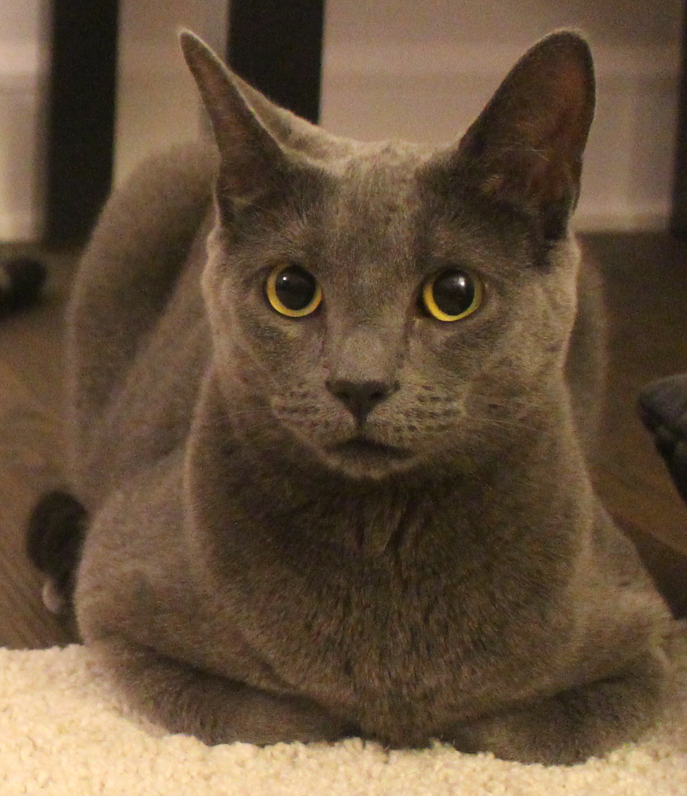
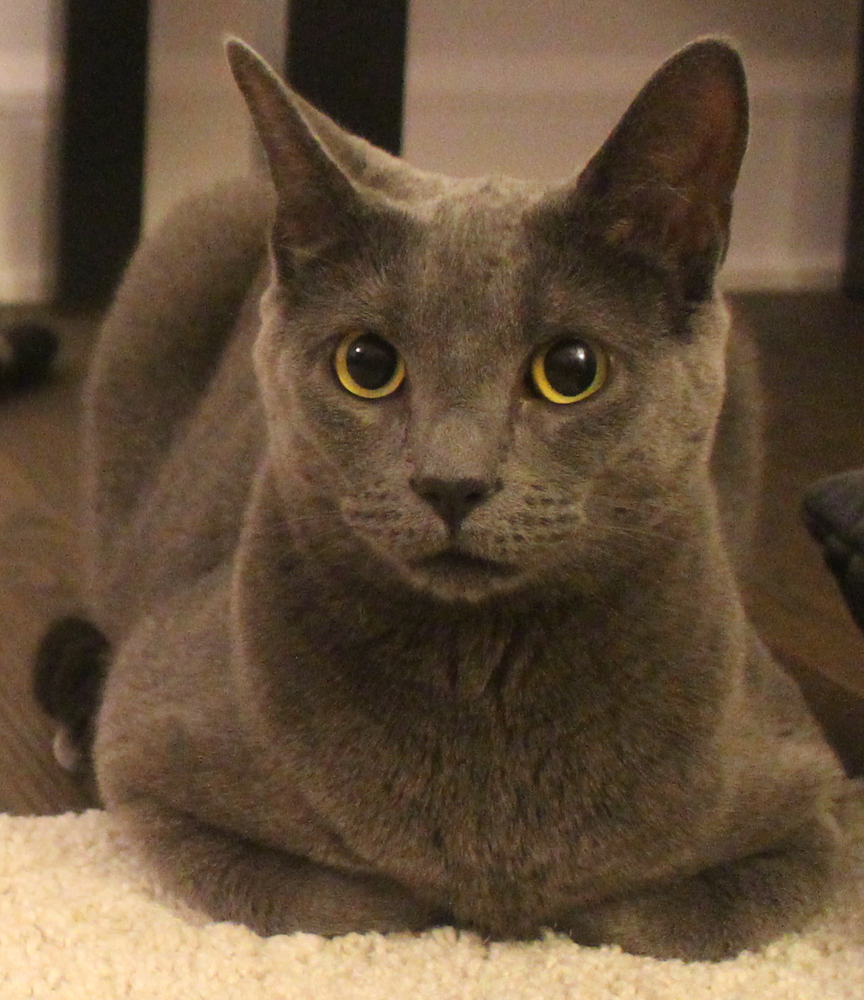

Mirabelle is a 2-year-old female cat, probably a Russian Blue mix.
She came to the family in February 2015, now she is a principal member of the family.
Mirabelle is not just another cat, she is curious, cautious and active, she loves to play and go out. She is dependent and needs personal space as well. She is a keeper.
Tsing is a true cat lover, he has shown a great affection for cats since a very young age, or I would rather say that his liking for them is more like an instinct.
Unlike those who are attracted only by the cute appearance, Tsing's affection is sincere. Every day he spends time playing with Mirabelle, he tries to understand her behaviors, her feelings,
and her needs. He makes sure that everything is good for her: he cleans the toilet every single morning, he always keeps an eye on her bowl in case it is going to be empty soon, and most important, he respects her nature and never forces her to do anything against her will.
If you have a pet cat then you must know that pain is inevitable, Tsing is no exception, he got all these scratches while playing with Mirabelle or trying to trim her nails. Those scratches, however painful they were, never
get in the way of his love, his pure, gentle and unconditional love.
Mirabelle
Mirabelle the cat, aka 'Mimi', considers herself as the master of the family. It is true that she is the one
that stays at home for the most of the time, and she is familiar with every single corner, especially those the others cannot reach to.
Mirabelle has zero tolerance for strangers, she sees them as 'intruders', for those of her size, she throws hisses at them; and for those of
much bigger size, she would hide from them. But once you get to know her (which requires much time), she would disguise herself as a cute and innocent cat.
Just like other cats, Mirabelle has a crazy fondness for warm sunshine, every afternoon she lies on the carpet let the sunshine cover her whole body except her head,
which is always beneath the sofa. She has her own way of weird, aren't we all? She enjoys being alone and yet not hiding the fact that she needs company sometimes as well.
She never hides her desire or fakes anything, she is true to herself, deep down in her heart, she never forgets that she is a predator and was born to rule.
Shino Shi
Even though after all these years living with Mirabelle the cat, this girl still considers herself as a dog person. For
a girl sensitive and insecure as Shino is, there is nothing wrong for her to want a pet to be loyal and supportive.
However, Mirabelle would never come to this family if it were not Shino who contacted her ex-owners (a nice couple but the boyfriend was
suffering from allergy) for adoption. She tried to develop a close relationship with Mirabelle at the very beginning, but before long did she realize that
things didn't work out the way she wanted: a cat can never be a dog, at least not for Mirabelle.
Currently, these two girls are keeping a healthy relationship, Shino has been holding back the urge to physically touch or binding emotionally with
Mirabelle. And she is the one with clear mind and tries to prevent Tsing from spoiling Mirabelle, she made rules like 'No balcony activities after sundown',
'Catmint once a week maximum' and etc. She voluntarily plays the 'bad cop' just so to protect Mirabelle even though she knows this can make the cat like her
less. And nobody says it is easy.

 



 ❮
❯
❮
❯

Comments